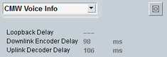

CMW Voice Info
To display the time delay of voice connections, select "CMW Voice Info" in the field below the event log area.
Values shown in the CMW voice info area are measured during the loopback connection or during the audio connection to the speech codec board.

CMW voice info area
The R&S CMW measures individual delays according to the following definition specified in 3GPP TS 26.132 Rel-12.
The system simulator delay in echo mode TSS is the delay between:
- The last bit of a received speech frame at the system simulator antenna (R&S CMW RF input connector) and
- The first bit of the looped back speech frame at the system simulator antenna (R&S CMW RF output connector).
The value is displayed if the "Data Source" = "Loopback".
Remote command:Displays the encoder/decoder time delay measured during the connection to the speech codec board when the "Data Source" = "Speech".
The system simulator delay in the downlink (UE receive) direction TTER is the delay between:
- The first electrical event at the electrical access point of the test equipment (R&S CMW audio input connector) and
- The first bit of the corresponding speech frame at the system simulator antenna (R&S CMW RF output connector).
The system simulator delay in the uplink (UE sending) direction TTES is the delay between:
- The last bit of a speech frame at the system simulator antenna (R&S CMW RF input connector) and
- The first electrical event at the electrical access point of the test equipment (R&S CMW audio output connector).